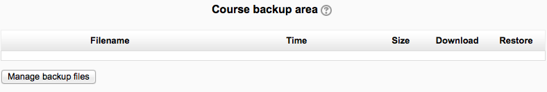
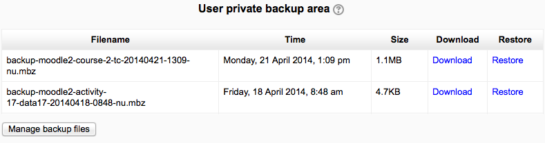

A course backup file (.mbz) may be restored from within any existing course for which you have permission. During the restore process, you will be given the option to restore as a new course or into an existing course.
Note that if your new course has fewer sections than the course you are restoring, the extra sections will appear as “orphaned activities”. Increase the number of sections in the new course to make them visible.
Go to Administration > Front page settings > Restore (if you have front page permissions) or Administration > Course administration > Restore (if you have an empty course to restore into.)
Upload the backup file or choose a file in the course backup area or user private backup area and click Restore
Confirm - Check that everything is as required then click the Continue button
Destination - Choose whether the course should be restored as a new course or into an existing course then click the Continue button
Settings - Select activities, blocks, filters and possibly other items as required then click the Next button
Schema - Select/deselect specific items and amend the course name, short name and start date if necessary then click the Next button
Review - Check that everything is as required, using the Previous button if necessary, then click the ‘Perform restore’ button
Complete - Click the continue button
 
- Create users on restore
- Configure restore options
- Restore activities
- Restore courses
- Restore sections
- Restore from files targeted as hub
- Restore from files targeted as import
- Roll activity configuration dates on restore
- Upload files to backup areas
- Restore user data
- Restore courses from automated backups